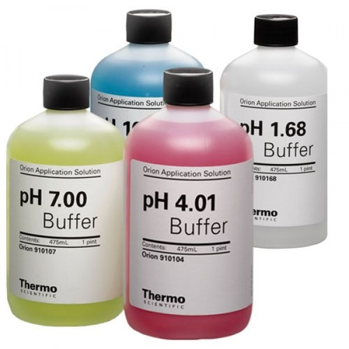

En bufferløsning er en vannløsning som består av en svak syre og dens korresponderende base
eller en svak base og dens korresponderende syre i et (som oftest) relativt likt stoffmengdeforhold.
Bufferløsningen har som funksjon at pH av løsningen endres lite når moderate mengder av en syre
eller en base tilsettes. Bufferløsninger brukes som en måte å holde pH på en nær konstant verdi
i en rekke kjemiske sammenhenger.

Ønsker man en buffer med pH<7, løser man en svak syre og et lettløselig salt av denne syren i vann.
Ønsker man en buffer med pH>7, løser man en svak base og et lettløselig salt av denne basen i vann.
I begge tilfeller får man en løsning med en sur komponent og en basisk komponent som utgjør et syre-base-par.
Løsningen blir dermed en buffer, så lenge forholdet mellom konsentrasjonene av de to komponentene er mellom 0,1 og 10.
Dette kan man se på som en syre-basetitrering. I halvtitrerpunktet er konsentrasjonen av den sure komponenten
lik konsentrasjonen av den basiske komponenten. Blandingen fungerer som en buffer rundt halvtitrerpunktet. (Den delen
av titrerkurven som er tilnærmet flat før man nærmer seg ekvivalenspunktet).